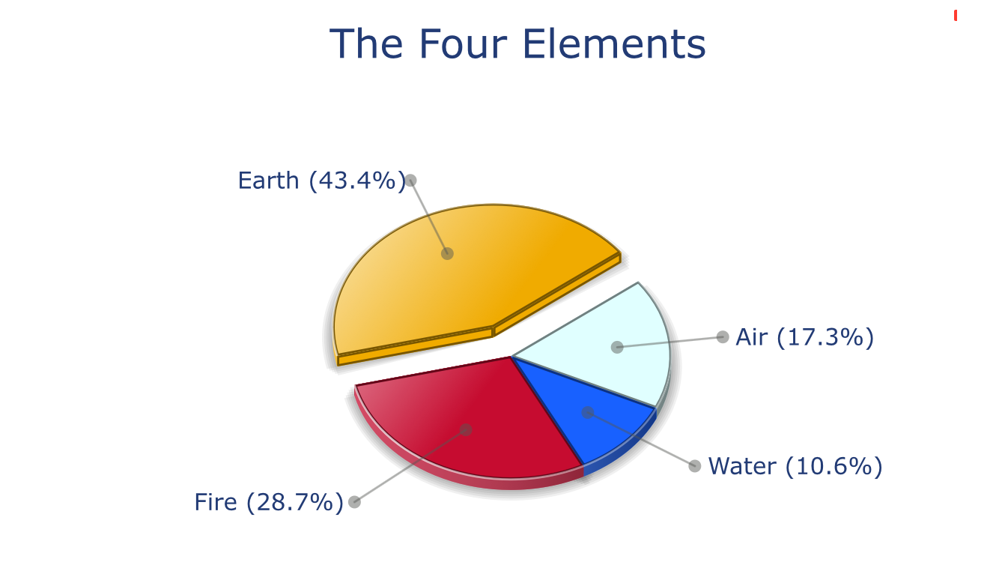

here is the diagram of ur elements!
computed on the basis of the positions of ur planets and angles in the twelve signs

like the majority of earth signs, u r efficient, concrete and not too emotional. what matters to u is what u see: u judge the tree by its fruits. ur ideas keep changing, words disappear, but actions and their consequences are visible and remain. express ur sensitivity, even if it means revealing ur vulnerability. emotions, energy and communication must not be neglected; concrete action is meaningless if it is not justified by ur heart, ur intellect or ur enthusiasm.
fire is second dominant in ur natal chart and endows u with intuition, energy, courage, self-confidence, and enthusiasm! u r inclined to be passionate, u assert ur willpower, u move forward, and come hell or high water, u achieve ur dreams and ur goals. The relative weakness of this element is the difficulty to step back or a kind of boldness that may prompt u to do foolish things.
< previous page next page >